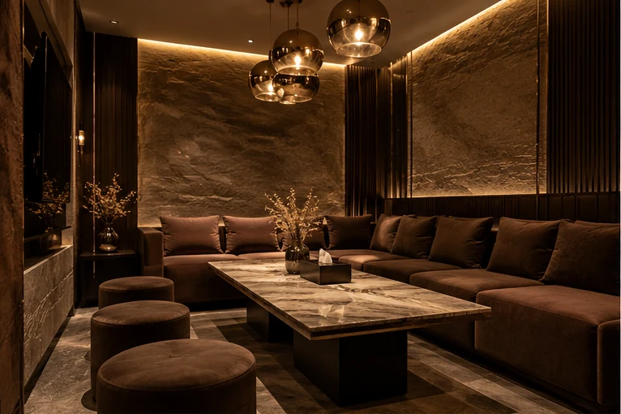

Jeda sejenak
Ambil waktu, pilih tempat duduk, dan nikmati suasana.
Ruang untuk kopi, cerita, dan momen yang tak perlu terburu-buru. Temukan pilihan rasa di Ashavin Coffee Space, Ponorogo.
DISCOVER THE MENU
Ashavin adalah coffee space di Ponorogo untuk berkumpul, mengerjakan sesuatu, atau menikmati waktu sendiri. Menyajikan kopi, menu non-kopi, makanan, dan banyak alasan untuk singgah.
Kenali AshavinSetiap kunjungan punya ceritanya sendiri. Jelajahi inspirasi suasana, minuman, dan sajian yang menjadi arah visual baru Ashavin.




Meja untuk berbincang, sudut untuk menyelesaikan pekerjaan, dan kesempatan untuk menikmati suasana yang berbeda.
Dari Caramel Macchiato dan Aren Latte hingga Es Teler serta makanan untuk menemani waktu panjang.
VIP Room Ashavin tercantum memiliki AC, karaoke, dan kapasitas sekitar 10–15 orang. Untuk meeting atau gathering, tanyakan ketersediaannya langsung kepada tim.
Lihat VIP RoomAmbil waktu, pilih tempat duduk, dan nikmati suasana.
Obrolan, pertemuan, dan momen yang terasa lebih dekat.
Tempat untuk diskusi, mengerjakan tugas, dan bertukar ide.
 VISUAL DEMO · NOT ACTUAL LOCATION
VISUAL DEMO · NOT ACTUAL LOCATIONPengunjung menyoroti suasana yang mendukung kegiatan bersantai dan mengobrol.
Ringkasan tema ulasan publikRagam kopi, minuman non-kopi, dan hidangan menjadi bagian dari pengalaman pengunjung.
Ringkasan tema ulasan publikSuasana berkumpul menjadi salah satu hal yang muncul dalam pengalaman pengunjung.
Ringkasan tema ulasan publikMasukan tentang layanan dan kenyamanan adalah perspektif yang penting didengar.
Ringkasan tema ulasan publikJl. Bhayangkara No.33, Banyudono, Ponorogo, Jawa Timur.
SETIAP HARI · 24 JAM
Petunjuk ArahUntuk reservasi, pertanyaan menu, atau acara komunitas, hubungi tim Ashavin secara langsung.